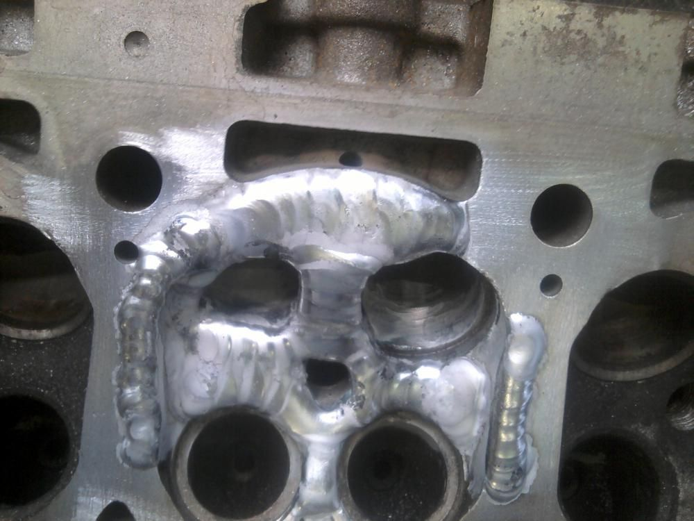
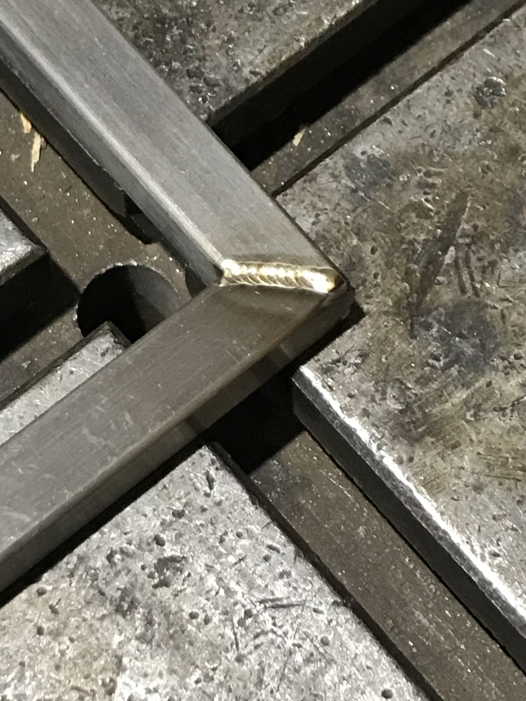

TIG-зварювання Олександра Колоса
Нержавійка, сталь, алюміній і титан. Ремонт металевих деталей і вироби під замовлення в Києві, понад 10 років з аргоном.
063 598 08 29 або в Direct @kolos.tig (відкриється в новій вкладці)
Поруч — розгортка бака для системи опалення з його посту. Гортайте: вона складеться в бак.
Маршрутна карта з посту
Бак для системи опалення
AISI 304, лист 1,5 мм
- Розкрій
- Складання й прихватки
- Алюмінієві пластини для відведення тепла
- TIG у режимі Puls, контроль тепловкладення
- Знецвітлення швів
- Електрохімічна обробка й пасивація стиків зсередини
- Піскоструменева обробка

Ще 11 карт з постів
Як Олександр сам їх описує: що за деталь, з чого, що з нею зробили. Ціни — лише там, де він їх назвав.
Показано 11 з 11 карт
-
Ніж, зламаний навпіл
зачистка до «живого» металу → TIG з присадкою на мінімальному тепловкладенні → повільне охолодження → механічна обробка шва → поліровка
-
Піддон авто
ремонтна вставка замість «заливки» → контроль температури й проплавлення
«Я не роблю „аби трималось“. Я роблю ремонт, який працює».
-
Розпорка стаканів BMW E32
кінці тріщин засвердлено → розшарошено до живого металу → знято оксид → знежирення → прогрів, масло й шлак виходять назовні → повторна очистка → лише потім TIG
«Тут не „підварити“. Тут — відновити деталь правильно».
-
Вушко колектора Land Cruiser
фаски фрезою → прихватки → локальний прогрів → аргон → відновлення форми
-
Підставка для ніг у перукарське крісло
інші розміри — під замовлення
2000 грн/шт від 5 шт — 1700 грн
-
Полиця
лазерна порізка (азот) → TIG → порошкове фарбування «чорний мат»
3500 грн/шт від 10 шт — інша ціна
-
Обідній комплект для сільгосппідприємства
шліфування → сатин
-
Каркас дивану
порізка, гнуття й фрезерування труб → TIG → шліфування → порошкове фарбування
-
Перфорована панель вентиляції
деталі з листового металу: панелі, кронштейни, вентиляція
-
Підлогова стійка для інформаційної таблички
лазерна порізка й гнуття → різка труб → контроль геометрії → TIG → шліфування
«Не кожен стик, який бачиш, потрібно заварювати».
-
Титанова обичайка
тріщина на прихватці, зробленій без захисного піддуву: показ, чому аргон потрібен з обох боків шва
«У роботі з титаном дрібниць не буває. Навіть звичайна прихватка потребує дотримання правильної технології».
Ще в роликах: тумба під мийку, вушко радіатора, електросамокат, TIG проти лазера, тепловідведення від деформації, шліфування, кутове зʼєднання до й після. Усі 31 пост @kolos.tig (відкриється в новій вкладці)
Шви крупно

«У багатьох випадках це майже ювелірна робота — контроль процесу, точність і чистий акуратний шов».



Чотири фото з оголошення на OLX з посиланням на @kolos.tig; які це замовлення, не вказано.